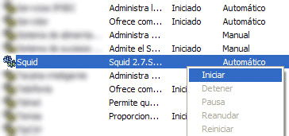

L’Squid és un servidor intermediari força complert que pot actuar tant de servidor intermediari com de memòria cau, per exemple, amb els protocols HTTP o FTP; també pot facilitar l’acceleració HTTP, cau de consultes DNS i tasques addicionals de seguretat com poden ser la filtració de continguts i el control d’accés segons l’adreça IP i l’usuari.
Un cop haguem descarregat l’arxiu en format zip, haurem de descomprimir-lo en una carpeta que anomenarem Squid i que deixarem dins del disc dur principal (C:\).
Un cop ja haguem desat els arxius del programari Squid dins del disc dur, haurem de configurar-lo; per aconseguir-ho, haurem d’obrir la carpeta etc (C:\Squid\etc). Un cop hi accedim, trobarem que hi ha diversos arxius que tenen format .conf.default; a partir d’ara, haurem de modificar els formats per deixar-los en format .conf.
Arribats a aquest punt, haurem d’accedir a l’arxiu squid.conf mitjançant la seva edició per configurar les regles d’accés, els permisos dels clients, etc. Per defecte, la xarxa local té permisos per les adreces de classe A, B i C.
Classe A → Rang de 10.0.0.0 a 10.255.255.255
Classe B → Rang de 172.16.0.0 a 172.31.255.255
Classe C → Rang de 192.168.0.0 a 192.168.255.255
Els ports per defecte serien:
acl Safe_ports port 80 # http
acl Safe_ports port 21 # ftp
acl Safe_ports port 443 # https
acl Safe_ports port 70 # gopher
acl Safe_ports port 210 # wais
acl Safe_ports port 1025-65535 # unregistered ports
acl Safe_ports port 280 # http-mgmt
acl Safe_ports port 488 # gss-http
acl Safe_ports port 591 # filemaker
acl Safe_ports port 777 # multiling http
Si necessitéssim establir més ports, hauríem de copiar una de les línies i introduir-hi el número del port corresponent. En conseqüència, aquests ports passaran pel servidor intermediari.
Val a dir que hi ha ports que els connectarà directament sense utilitzar el servidor intermediari, això és, l’HTTPS (443) que, si considerem que és encriptat, no el pot manipular el servidor intermediari.
acl SSL_ports port 443
Considerant que el programari Squid utilitza el port 3128 per rebre les connexions, podem afegir algunes més; per exemple, si hem considerat poc viable canviar el port 3128 per 8080, o bé, afegir-la. Per fer-ho, haurem de copiar la línia i posar el número de port corresponent (per exemple, http_port 3128) i, a continuació, traurem el símbol # al principi de la línia cache_dir ufs c:/squid/var/cache 100 16 256.
Paral·lelament, també podrem augmentar la grandària de la memòria per a l’emmagatzematge de 100 a un altre valor de, per exemple, 1000. D’altra banda, també podem buscar la línia visible_hostname i hi col·locarem el nom de la nostra màquina. En aquest, si no el coneixem, haurem d’adreçar-nos a Inici i, a continuació, escriurem i executarem msinfo32 per veure el nom del sistema.
A continuació, buscarem la secció de les llistes d’accés; la secció ACCESS CONTROLS de l’arxiu squid.conf la identificarem perquè conté la paraula acl.
acl all src 0.0.0.0/0.0.0.0
acl manager proto cache_object
acl localhost src 127.0.0.1/255.255.255.255
acl to_localhost dst 127.0.0.0/8
acl SSL_ports port 443 563
acl Safe_ports port 80 # http
acl Safe_ports port 21 # ftp
acl Safe_ports port 443 563 #
https, snews acl Safe_ports port 70 # gopher
acl Safe_ports port 210 # wais
acl Safe_ports port 1025-65535 # unregistered ports
acl Safe_ports port 280 # http-mgmt
acl Safe_ports port 488 # gss-http
acl Safe_ports port 591 # filemaker
acl Safe_ports port 777 # multiling
http acl CONNECT method CONNECT
I, a sota, escriurem acl la_nostra_xarxa src 192.168.0.0/255.255.255.0; val a dir que també podem crear un arxiu .txt i guardar-lo a c:\squid\etc on emmagatzemarem la (o les) adreces d’Internet (IP) que vulguem que accedeixin als serveis de xarxa.
Per exemple:
192.168.0.1
192.168.0.2
192.168.1.3
192.168.3.45 → Únicament les màquines amb aquestes adreces IP accediran a la xarxa d’Internet. En aquest cas, l’arxiu s’anomenarà permesos.txt i es guardarà a c:\squid\etc.
Sota de la línia acl CONNECT method CONNECT, haurem d’escriure acl la_nostra_xarxa src “c:/squid/etc/permesos.txt”
Buscarem la línia http_access allow manager localhost i, a sota d’aquesta línia, afegirem http_acess allow la_nostra_xarxa.
Des del punt de vista de les memòries cau, crearem els següents directoris de forma manual:
C:\squid\var\cache
C:\squid\var\cache0
C:\squid\var\cache1
C:\squid\var\cache2
C:\squid\var\cache3
C:\squid\var\cache4
C:\squid\var\cache5
C:\squid\var\cache6
C:\squid\var\cache7
C:\squid\var\cache8
C:\squid\var\cache9
C:\squid\var\cacheA
C:\squid\var\cacheB
C:\squid\var\cacheC
C:\squid\var\cacheD
C:\squid\var\cacheE
C:\squid\var\cacheF
És a dir, ens adreçarem al directori var i crearem un directori anomenat cau (cache) i, a continuació, crearem diversos directoris anomenats de 00 fins a 0F (es tracta de la numeració hexadecimal).
En el cas que, per exemple, volguéssim establir un control parental mitjançant la limitació de l’accés a determinades pàgines web, haurem de crear, mitjançant el bloc de notes, dos arxius de text.
Per exemple, podem crear un arxiu anomenat prohibits.txt que contindrà aquells llocs web www.sex.com, www.yonkis.com, etc.) als quals no vulguem que accedeixin els usuaris de la xarxa que administrem. Val a dir que, si bloquegem una paraula, el programari Squid bloquejarà tots els llocs web que la continguin en la seva adreça web. Per exemple, tot i que restringim la paraula anglesa sex, la paraula sexta tampoc estarà permesa).
El segon arxiu de text s’anomenarà extensions.txt i serà el que ens ajudarà a bloquejar la descarrega d’arxius amb extensions no desitjades com, per exemple, .mp3$, .exe$, .avi$, etc. A continuació, els cridarem amb les següents línies de codi:
acl prohibits url_regex “/squid/etc/ prohibits.txt”
acl extensions urlpath_regex “/squid/etc/extensions.txt”
Per tant, l’arxiu podria quedar com segueix:
acl all src 0.0.0.0/0.0.0.0
acl manager proto cache_object
acl localhost src 127.0.0.1/255.255.255.255
acl to_localhost dst 127.0.0.0/8
acl SSL_ports port 443 563
acl Safe_ports port 80 # http
acl Safe_ports port 21 # ftp
acl Safe_ports port 443 563 # https, snews
acl Safe_ports port 70 # gopher
acl Safe_ports port 210 # wais
acl Safe_ports port 1025-65535 # unregistered ports
acl Safe_ports port 280 # http-mgmt
acl Safe_ports port 488 # gss-http
acl Safe_ports port 591 # filemaker
acl Safe_ports port 777 # multiling http
acl CONNECT method CONNECT
acl la_nostra_xarxa src “/squid/etc/permesos.txt”
acl prohibits url_regex “/squid/etc/prohibits.txt”
acl extensions urlpath_regex “/squid/etc/extensions.txt”
Arribats a aquest punt, ens adreçarem al terminal de comandes (Inici > Executar > cmd) i executarem c:\squid\sbin\squid.exe –z.
Podem instal·lar el programari en dos modalitats possibles, això és, com servei que arrenca automàticament quan s’encén l’ordinador, o bé, arrencar el programari Squid manualment per cada cop que sigui necessari. Per instal·lar-lo en mode de servei, executarem c:\squid\sbin\squid.exe –i i, a continuació, per arrencar-lo, net start squid. Si optem per aquesta modalitat, haurem d’obrir el port3128 en el tallafocs (firewall); també haurem d’obrir tots aquells ports d’escolta que haguem definit amb anterioritat.
Un cop ja tinguem registrat el programari Squid en el nostre ordinador, ja podrem posar-lo en marxa . Per fer-ho, haurem de reiniciar, o bé, adreçar-nos a Inici > Executar i escriurem i executarem services.msc. Dins de la llista que aparegui, haurem de cercar Squid per, un cop ens haguem situat a sobre, clicar amb el botó dret del ratolí en l’opció Iniciar.

Ara bé, en el cas que no haguéssim instal·lat el programari com un servei, senzillament, haurem d’executar C:\squid\sbin\squid.exe. Mentre s’executi, la pantalla apareixerà en negre; per desconnectar el programari, haurem de tancar aquesta mateixa finestra.
Un cop configurat el programari, ja podem configurar els navegadors web. En aquest cas, pel navegador web Internet Explorer, haurem d’adreçar-nos a la pestanya Opcions d’Internet > Connexions > Configuració de XAL.
Aquesta configuració no solament la utilitzarà el navegador web Internet Explorer, sinó que també la utilitzarà el seu programari de conversa instantània (Windows Live Messenger) i altres programes que comparteixen aquesta configuració.
En el cas del navegador web Firefox, haurem d’adreçar-nos a la pestanya Eines > Opcions i, un cop dins, picarem sobre l’opció Avançat > Xarxa > Paràmetres.